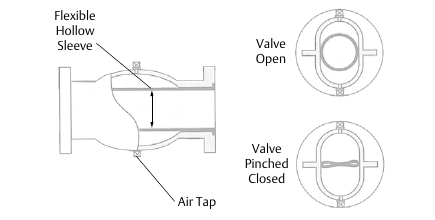

Pinch Bodies — Sleeve Construction

- 1Flexible Hollow Sleeve — the only element in the flow path; the wear item a replacement interval is spec'd against
- 2Air Tap — admits the pinching pressure that collapses the sleeve
- 3Valve Open — sleeve full-bore, unrestricted flow
- 4Valve Pinched Closed — sleeve collapsed shut across the bore
After Control Valve Handbook, 6th ed., Fig. 10.33 — used directly (three-panel composite kept as one figure, Style Guide Sec 5.14), own printed labels retained (Sec 6.3). Component Index: cvh-cmp-air-operated-pinch-valve.